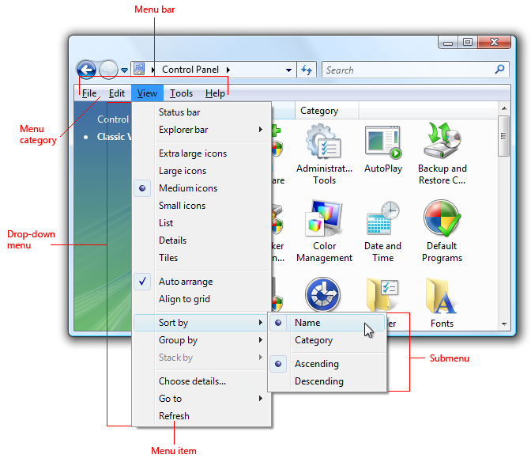

03. Interface de Usuário Orientada por Menu
Nesta interface, o usuário realiza tarefas escolhendo opções dentro de listas suspensas, eliminando a necessidade de memorizar comandos.
Ela é frequentemente encontrada em caixas eletrônicos de bancos, painéis de televisores inteligentes e sistemas de restaurante.
